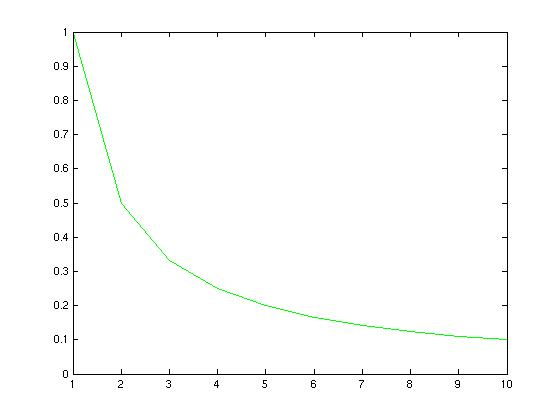
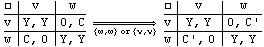
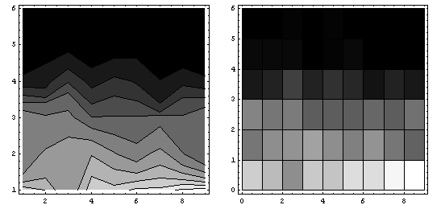
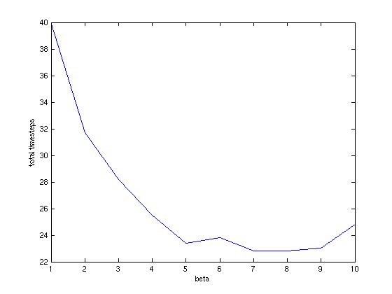
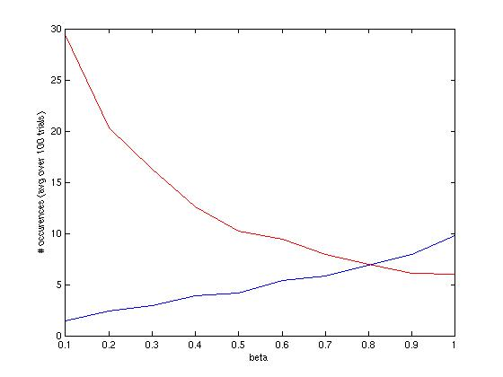
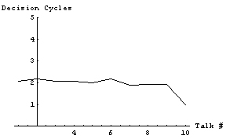
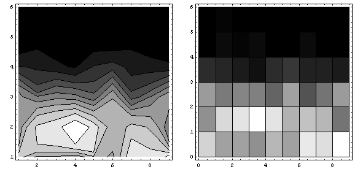
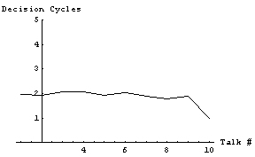
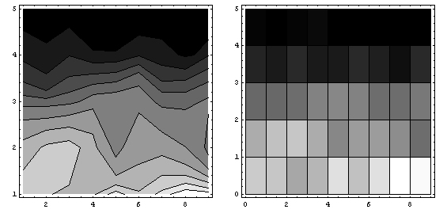
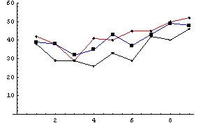

Stochastic Volunteers: Edgy Kids
by Adrian de Froment and Markus Schneider
July 2005
Problem:
We focused on the following problem: 10 students are asked to give presentations and have to figure out a sequence to go in.
However, we were not interested in some strategic interaction between student vying for the same presentation slot, or some
sorting by preference. Instead we imagined 10 students who do not want to go first or last, but are ambivalent about what
other students do. The mechanism for choosing a presentation sequence comes from students volunteering impulsively. During
each round, students choose to either wait or volunteer. The probability that a student will volunteer depends on
1) inversely the number of students who have yet to go, and 2) how many rounds have gone by without a volunteer stepping
forward. Thus, students have a dispreference for awkward silences when there is no volunteer - i.e. they get edgy - but are
willing to wait longer when only a few students have gone and will volunteer quickly if there are only two students left to go.
- Ten students each need to give a five minute talk, one after the other. The order of the presentations is not specified. What happens?
- How might the students resolve the problem of deciding an order among themselves?
- How quickly will volunteers come forward for each presentation slot?
Assumptions:
- The presentation sequence is based on students volunteering.
- Students have no preferences over particular presentation slot, though they are willing to delay volunteering more when few students have presented.
- Based on detailed observations of real students, we assumed they would not want to go first or last.
- We also assumed students become ‘edgier’ the longer the time that passes without a volunteer for a given slot, and are more likely to volunteer.

The graph above shows the probability of volunteering on the vertical axis versus the number of students who stillahve to present.
Our chosen probability function captures both the unwillingness to go first - the number of students who still have to present, n, is largest at the beginning - and their unwillingness to present last (the probability of volunteering is greatest in the penultimate round, and not volunteering then guarantees you will be last).
Detailed Model Description:
In a sense, we can imagine this set up as a sequentially played coordination game of sorts, with payoffs arranged so that student play mixed strategies.
However, students do not calculate their expected payoffs across periods of waiting, but treat each round as a new one-shot game. If all students wait,
then the game is repeated with adjusted payoffs such that the probability of students volunteering increases. For two students:
, where Y > C' > C
In a game with more than two students, all volunteers enter a run-off game. To simplify our simulation, the first volunteer in the run-off game is picked. However, the basic principle of the game remains unchanged: students are social and do not want to be seen as slackers. They are ambivalent about waiting among other students who wait and volunteering simultaneously, but the payoff for waiting when another student volunteers is the worst possible. Being the volunteer when others wait has some positive payoff less than if they all wait or all volunteer. In a sense, students want to hide in the crowd.
Instead of trying to model the above game with 10 players, assigned players the appropriate probability of volunteering corresponding to the mixed strategy play for each round (1).
The probability of volunteering, P, is thus simply the ratio of rounds without a volunteer, t, over the number of students who have not yet presented, n. We added a proportionality parameter, ß, to be able to tune the model. In further runs, ß could also be used to make the student pool heterogeneous. As long a ß is 1, there should on average be one volunteer that jumps up to fill a particular slot each time. If there is no volunteer during the first round, then the chance of multiple volunteers increases.
We set up three different experiments. First, we ran just the basic model as described above. This represented the case were the Professor calls for volunteers to fill all the presentation slots before any student presents. Over a hundred runs, it took on average two decision cycles before a student would volunteer for any of the available slots. The mode for cycles during which there was a volunteer was one.
In our other two experiments we wanted to explore the effect of some reaction to the preceding presentation. To implement this, we changed the probability that a student would volunteer to (2).
The a in the coefficient is the reaction term that scales the student's willingness to volunteer based on the previous presentation (a is uniformly distributed between 0 and 1). The two experiments we ran either took a as some collective reaction that was the same for all students, or as each student's individual reaction. In either case, the presence of a did not seem to affect the results of our simulations, even when we scaled the results for the collective a.
Results:
As mentioned above, we ran three distinct experiments. In addition, we conducted a simple sensitivity study of the proportionality
parameter in (1). We present the results for the basic model and the sensitivity study before presenting the results of the information
experiments below.

The graph above shows the mean number of decision cycles it took to choose a presenter for each talk. Surprisingly, it took on average two decision cycles to find a volunteer for all presentation slot. The experiment comprised 100 runs with 10 students each.

Another way of looking at the way that volunteers were chosen is to look at the frequency map of how many decision cycles it took across the hundred runs. The left graph above is a contour plot of the frequency map, while the right graph shows the same data as a density plot. Notably, most of the hundred runs had students volunteer during the first and second decision cycle. Intuitively, this makes sense since the probability of volunteering is directly proportional to the number of students left, so that for each first call for volunteers there should be on average one volunteer. By implication, if all students wait, the chance of multiple volunteers starts to increase the longer they wait.

The proportionality parameter, beta, was varied from 0.1 to 1 to simulate varying levels of class-wide ‘shyness’. With a lower beta, the students were simply more unwilling to volunteer.
As beta was varied from 1 to 0.1, the decision time first decreased, before increasing such that the time for 0.1 was far longer than that for 1 (see the first graph below).

This had a simple explanation: as the probability of volunteering decreased, there were more time steps with no volunteers, as we expected. However as the probability of volunteering increased there were more time steps with multiple volunteers, which also resulted in increased decision times (red: no-one volunteers, blue: >1 person volunteers).
Information Experiments

Repeating the experiment when agents have a unanimous reaction to the presentation does not seem to change the mean result. Over a hundred runs, the mean time it takes to find a volunteer is still two cycles.

Looking at the frequency maps above, it seems that the mean decision time fails to capture a slight shift towards actual second round decisions.

Finally, simply allowing the agents to have an individual, subjective reaction to a presentation does not seem to influence the result at all.

Above are the frequency maps for the final experiment, showing that having some individual reaction to the previous talk does not influence the time it takes to find volunteers. Of course, the order during each run may be highly correlated to the agents' subjective a.

Just to follow up on the casual observation that having some collective reaction to a presentation seemed to influence the result, let's look at the frequency of first round decisions for all three experiments. On the graph above, the frequency with which single volunteer stepped forward during the first round is plotted against the talk number (horizontal axis) for all three experiments. In the graph above, the red line is the basic experiment, the blue line is the experiment where agents have individual reactions, and the black line is the result of agents having a collective reaction. Looking at the first data point, out of a hundred runs there were around forty runs were a single student volunteered to give the first presentation during the first decision cycle for all three experiments.
Two features appear when looking at these frequencies: first we notice that the likelihood of a second-round volunteer is slightly higher when agents have a collective opinion about the presentation. Second, across all three experiments the likelihood of a first-round volunteer is slightly higher for the early and late presentation slots, which seems to contradict our basic assumption that agents would not want to go first or last!

Just to verify the above observations, we should look at the frequencies of second-round volunteering across all three experiments. Indeed, it seems that having a collective reaction to a presentation biases the process towards second-round volunteering, and that second-round volunteers are less likely during the early and late presentation slots.
Conclusion:
We created a simple model in which students volunteer to give talks. They are more likely to volunteer the fewer students there are left (which implies an aversion to first or last place). They are also more likely to volunteer after a ‘long, awkward silence’, that is to say the longer no one volunteers.
We expected decisions to be made more quickly the fewer students were left, but this was not the case. We found that if we wished to minimize the time the volunteering process took, the optimal level ‘shyness’ (a parameter adjusting all probabilities of volunteering) was non-zero. That means that students less willing to volunteer may actually conduct the volunteering process more quickly.
We modelled student reactions to previous talks as a simple random variable, and found it had no effect on mean decision times. This is an area for further work, as we could come up with other more accurate ways of capturing student heterogeneity both in terms of preferences and talk quality. It would be interesting to extend this work by including a professor grading the students, with their preferences a function of their expectations of her grading behavior.